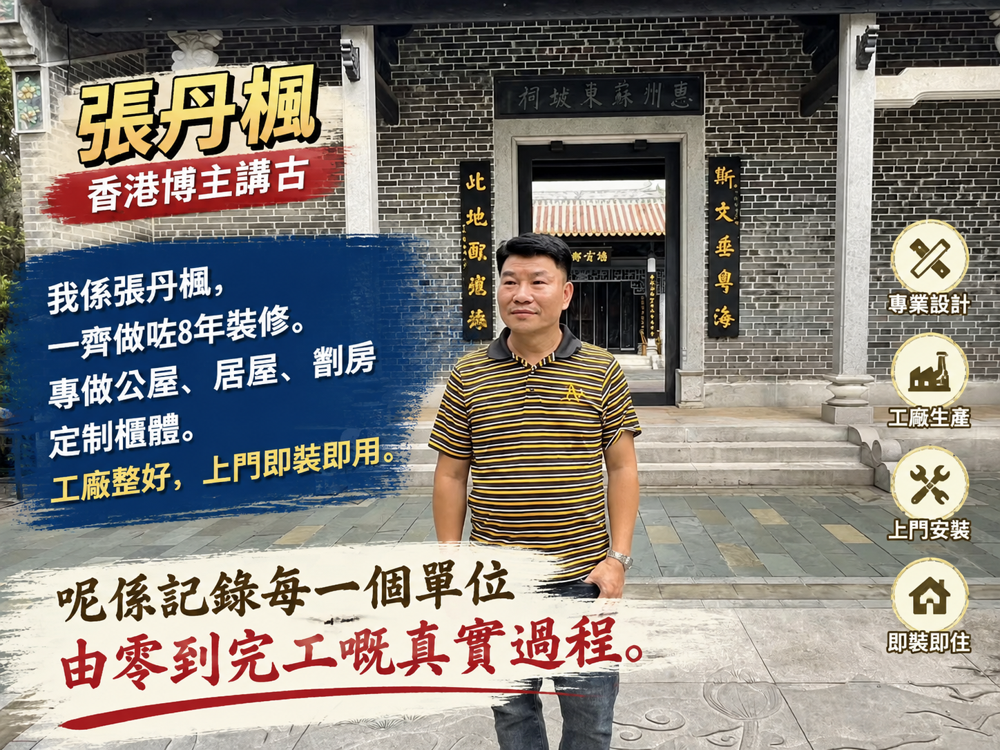

香港裝修定制博主夫妻檔，8年行業經驗。張丹楓負責工地統籌，雲蕾負責設計把關。專做公屋、居屋、劏房、私樓定制櫃體。工廠預製，上門即裝即用。
「用故事同工藝，連接每一個家」
張丹楓工地統籌，雲蕾設計把關。專注香港小戶型裝修定制，公屋、居屋、劏房、私樓一條龍服務。工廠預製櫃體，現場無塵安裝，半日至一日完工。
「博主講古」欄目記錄香港裝修界嘅真實故事——師傅傳承、行業變遷、客戶人生百態。用故事建立信任，用專業贏得口碑。
每週三、六晚八點直播，張丹楓帶你走進工地現場，雲蕾講解設計細節。解答裝修疑問、分享行業內幕。
旺角自營工廠，從開料到封邊全流程掌控。嚴選多層實木夾板，德國五金配件，五年保養承諾。
喺旺角開設第一間工作室，專做定制家具。初期只有兩個師傅，一輛貨車。
搬入千呎工廠，引入CNC切割機同自動封邊機。實現「工廠預製、上門即裝」模式。
開始記錄行業故事，從師傅傳承到客戶百態。用文化輸出建立品牌差異化。
入駐抖音、小紅書、微信視頻號。每週固定直播，累積粉絲超過十萬。
「萍踪侠影录」品牌全面升級，從裝修服務商轉型為行業文化輸出平台。